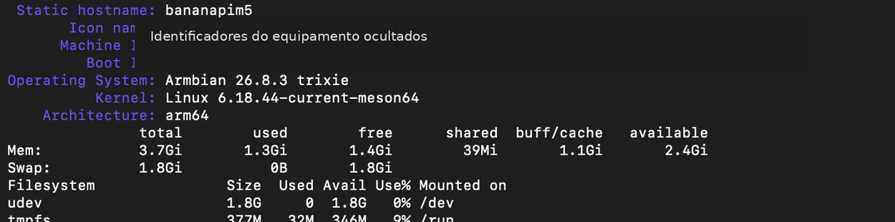
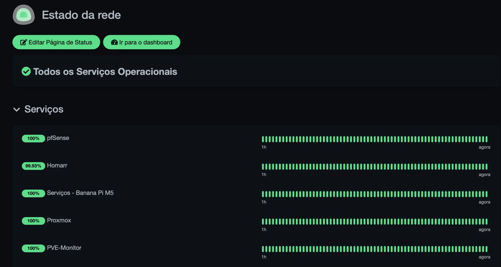
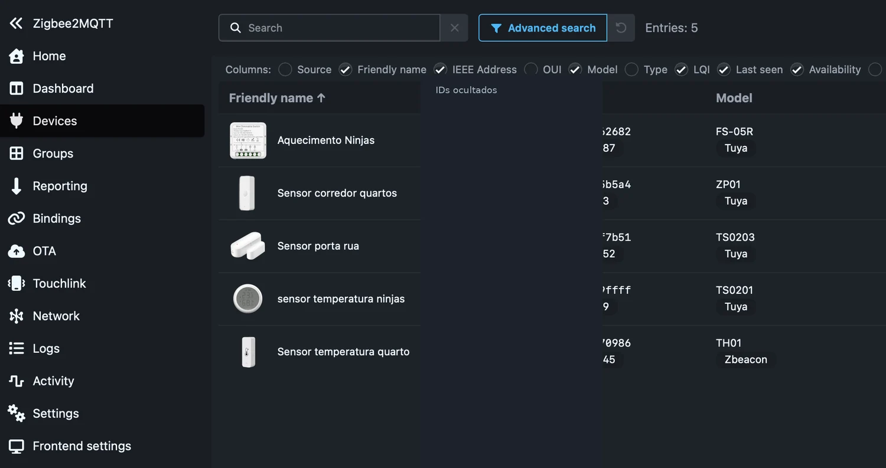

phpIPAM + MariaDB
Inventário e organização dos endereços IP e das redes. O phpIPAM apresenta a interface; a base de dados guarda a informação, e uma tarefa agendada auxilia a manutenção da aplicação.
Wiki
Um pequeno computador, vários serviços e muitas possibilidades para aprender, experimentar e manter uma rede viva.
LABORATÓRIO · ARM64 · ARMBIAN · DOCKER
Há uma certa graça em descobrir que uma placa que cabe na palma da mão consegue prestar serviços que, há uns anos, pediríamos a um computador inteiro. O Banana Pi M5 começou por ser mais uma peça do laboratório. Hoje é um dos pontos onde se cruzam a domótica, a monitorização e a gestão de rede.
O objetivo não é bater recordes de desempenho nem transformar cada experiência numa infraestrutura empresarial. É perceber como os serviços funcionam, como comunicam entre si e como se pode construir algo útil com recursos modestos. E há uma vantagem adicional: como o equipamento consome relativamente pouca energia, faz sentido deixá-lo ligado para tarefas que precisam de funcionar ao longo do dia.

O sistema utilizado é o Armbian, com base Debian, numa arquitetura ARM64. É uma combinação particularmente adequada a equipamentos de placa única: mantém a flexibilidade de um Linux completo, sem exigir o peso de um ambiente gráfico sempre ligado. O trabalho faz-se sobretudo pela rede, com acesso remoto, serviços de sistema e aplicações web.
Na captura recolhida, o equipamento apresenta cerca de 3,7 GiB de memória utilizável, dos quais aproximadamente 1,3 GiB estavam em uso. O volume de sistema, de cerca de 15 GB, tinha uma ocupação próxima de 35%. São apenas valores de um momento, não garantias de desempenho futuro, mas ajudam a perceber a margem disponível e a importância de acompanhar o crescimento dos dados.

É precisamente esta simplicidade que interessa num laboratório: saber o que está a correr, onde estão os dados, como se reinicia um serviço e como se descobre a causa quando alguma coisa deixa de responder. Há muita aprendizagem escondida em tarefas aparentemente rotineiras.
Instalar todas as aplicações diretamente no mesmo sistema pode funcionar, mas depressa aparecem conflitos entre versões, bibliotecas e dependências. O Docker permite organizar a maior parte destas aplicações em containers: ambientes separados, cada um com a sua função e com os recursos e volumes de dados de que necessita.
Isso não significa que os serviços fiquem magicamente independentes. Continuam a partilhar o hardware, a rede do anfitrião e, em muitos casos, dependem uns dos outros. A diferença é que ficam mais fáceis de identificar, atualizar, reiniciar e substituir. Se um serviço precisar de uma nova versão, é possível tratar dessa aplicação sem reinstalar tudo o que está à volta — com os devidos cuidados e backups.
Inventário e organização dos endereços IP e das redes. O phpIPAM apresenta a interface; a base de dados guarda a informação, e uma tarefa agendada auxilia a manutenção da aplicação.
Acompanha a latência e as variações de resposta de equipamentos e destinos. É uma ajuda preciosa quando a rede “parece lenta”, mas não é óbvio onde está o problema.
Verifica a disponibilidade de serviços e apresenta, de forma simples, o que está operacional e o que precisa de atenção.
Fazem a ponte entre dispositivos Zigbee, mensagens MQTT e sistemas de automação como o Home Assistant.
Um ponto de entrada para a infraestrutura: em vez de navegar por endereços dispersos, os serviços ficam reunidos num painel visual.
Na captura foram identificados oito containers: phpipam-web, phpipam-cron, phpipam-mariadb, smokeping, uptime-kuma, zigbee2mqtt, mosquitto e homarr. São oito processos de serviço diferentes, não oito computadores independentes.
Uma rede não fica saudável apenas porque a Internet abre no navegador. O acesso à firewall pode estar disponível e, ao mesmo tempo, um painel ou uma aplicação interna ter parado. É aqui que entra a monitorização.
O Uptime Kuma acompanha serviços essenciais e oferece uma página de estado com indicadores fáceis de interpretar. Em vez de consultar vários equipamentos à procura de sinais de vida, basta olhar para o painel para ter uma primeira ideia do que está a funcionar. A captura mostra verificações de serviços como pfSense, Homarr, Proxmox e outros elementos da infraestrutura.

Há também uma distinção importante: um indicador verde significa que aquela verificação teve sucesso; não prova que toda a aplicação esteja perfeita. A monitorização serve para detetar sintomas rapidamente, não para substituir o diagnóstico. Quando algo falha, o passo seguinte é olhar para conectividade, logs e consumo de recursos.
Para tornar esta informação mais útil no dia a dia, foram criados pequenos scripts auxiliares e uma apresentação compacta dos estados, pensada para integração com o dashboard. Não é necessário publicar o código para explicar a ideia: recolher a informação relevante, simplificá-la e apresentá-la onde faz falta.
Um dos trabalhos mais interessantes do Banana Pi é servir de base à comunicação com dispositivos Zigbee. Sensores de temperatura, contactos de portas e módulos de controlo têm capacidades diferentes, mas podem participar no mesmo ecossistema de automação.
O Zigbee2MQTT comunica com a rede Zigbee por intermédio de um adaptador compatível e transforma eventos e estados em mensagens MQTT. O Mosquitto funciona como intermediário dessas mensagens. O Home Assistant pode então consumir essa informação para apresentar estados, criar dashboards e executar automatismos.

O interesse não está só em acender uma lâmpada a partir de um telemóvel. Está em compreender que cada peça tem uma função: uma rede sem fios para os sensores, um serviço que traduz os dados, um broker que distribui mensagens e uma plataforma que as usa. Separar estas responsabilidades torna o projeto mais fácil de compreender e de manter.
Quando se abre o Homarr, vê-se sobretudo um conjunto de atalhos e indicadores. Por trás dessa aparência simples existe trabalho de organização: escolher os serviços que merecem destaque, agrupar por função, configurar verificações e garantir que a informação aparece de forma legível.
A gestão dos endereços com o phpIPAM segue o mesmo princípio. Numa rede com diferentes VLANs, servidores, pontos de acesso e equipamentos de teste, confiar apenas na memória acaba por falhar. Um inventário ajuda a perceber o que existe e a manter alguma disciplina quando se acrescentam novos dispositivos.
Já o SmokePing olha para outra dimensão: não basta um equipamento responder; interessa perceber como responde ao longo do tempo. Oscilações de latência e perdas podem ajudar a investigar falhas intermitentes que não aparecem numa verificação ocasional.
É precisamente aí que o laboratório se torna mais interessante. Um serviço que deixa de arrancar obriga a distinguir entre uma falha da aplicação, um problema de rede, uma configuração incorreta ou falta de recursos. Em vez de tratar tudo como “não funciona”, aprende-se a fazer perguntas mais específicas.
A abordagem passa por confirmar o estado do container, observar os registos, verificar se as dependências estão operacionais e só depois alterar configurações. Nos serviços que precisam de arranque automático ou integração com o sistema, podem existir unidades systemd e scripts de apoio. Nesta Wiki fica descrito o seu propósito e a experiência adquirida, sem divulgar implementações internas, credenciais ou caminhos privados.
Um erro de configuração pode ensinar mais do que uma instalação perfeita. A diferença está em conseguir reproduzir o problema, perceber a causa e documentar uma solução simples. É essa metodologia — experimentar, observar, corrigir e repetir — que transforma um conjunto de equipamentos num verdadeiro laboratório.
O Banana Pi M5 não pretende substituir um servidor de grande capacidade. O seu valor está noutro ponto: permite concentrar serviços leves, manter funções de apoio à rede e testar integrações com um investimento reduzido em espaço e energia. Também permite comparar duas abordagens muito comuns: máquinas virtuais no Proxmox para testar sistemas completos e containers no Banana Pi para executar aplicações de forma modular.
Mais do que a quantidade de aplicações instaladas, interessa a ligação entre elas. Uma rede organizada por VLANs, serviços monitorizados, sensores integrados e uma interface central formam um conjunto que se pode compreender, melhorar e expandir. Não é uma infraestrutura acabada — e essa é talvez a sua melhor característica. Há sempre uma experiência seguinte.
Um computador pequeno pode ser o centro de um projeto grande: não pela potência, mas por tudo o que permite aprender sobre Linux, Docker, redes, monitorização e automação.
Explorar o Home Lab →